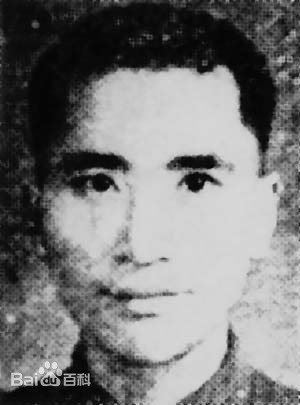

-
- 颜伏
颜伏（1911—1995），四川省梁山县（今重庆市梁平县）人，1911年出生于封建地主家庭，原名颜宗羲。幼读私塾，因不满家庭束缚，离家出走到成都求学，1930年考入成都民立大学。在校期间，参加学潮，被军警抓获，后由学校保释。1931年，颜伏到北平北京大学读书，1933年加入中国共产党，从事地下工作，历任北平市反帝大同盟青年部部长、北平市反帝大同盟区委书记、河北省委组织部干部组长、中共北方局组织科股长。在此期间，他三次被抓，均未暴露身份而获释。在淮海战役中，颜伏患肺病，两次昏倒在指挥所，被送到后方治病。1950年，到三野特科学校任副校长、中国人民解放军炮7师师长。
-
- 邓平寿
邓平寿（1955年12月17日~2007年2月2日），于1998年任重庆市梁平县虎城镇党委书记，上任以来，以高度的事业心和责任感，以服务农村农业农民为己任，发展本地经济、改善群众生产生活条件、积极兴办社会事业，使虎城镇由一个山区穷镇变成了远近闻名的富镇。2007年6月17日，新华社播发长篇通讯《春蚕到死丝不尽——记重庆市梁平县虎城镇原党委书记邓平寿》，全面介绍了邓平寿的感人事迹，随后，全国多家媒体先后刊发报道，掀起了一个学习邓平寿的热潮；重庆市授予邓平寿“重庆直辖十年建设功臣”荣誉称号。2009年，邓平寿入选“100位新中国成立以来感动中国人物”之一。
-
-
 竹禅
竹禅
竹禅（1824～1901），俗姓王，法名熹，清代著名书画大师、佛学大师、古琴大师， 曾为慈禧太后作画、传戒。四川省梁山县（今重庆市梁平区）仁贤乡人，双桂堂第十代住持方丈，擅长书画、金石雕刻、绘画自成一格，水墨人物、山水、竹石，别成一派，题画诗亦佳，多为禅机佛语，与“扬州八怪”齐名，居清中晚期书画名家之首。其书画作品收入《海上墨林》、《韬养斋笔》、《益州书画录》等书中 。著有《画家三昧》6卷传世，其名载入《中国美术家名人辞典》。被列为世界著名宗教人物。
-
-
-  蓝蒂裕
蓝蒂裕（1916年~1949年10月28日），重庆市梁平县人，青年时参加救亡运动，1939年加入中国共产党。他先在重庆海员工会担任《新华日报》发行员，后又做党的交通工作。在国民党掀起的第二次反共高潮中，他不幸被捕，却又挖墙逃离虎口。在与党一度失掉关系的情况下，他继续自觉从事进步工作。1949年10月28日晨，蓝蒂裕等革命志士被特务从狱中押出，他意识到生命已到最后时刻，在将写好多时的《示儿》遗诗交给难友后，从容不迫地走向刑场。
- 何云刚
-
 王敏
王敏
- 谢世杰
- 蓝蒂裕
- 颜伏